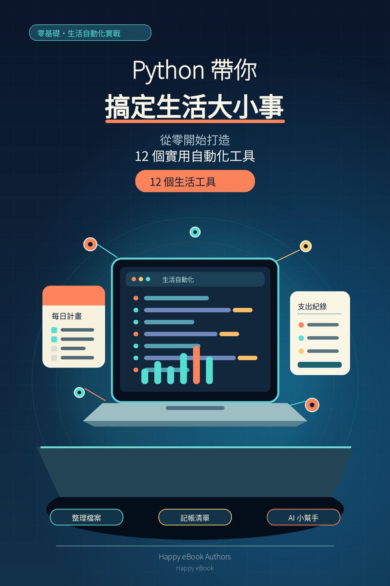

電子書
Python 帶你搞定生活大小事
想學 Python，卻不知道從哪裡開始？與其先背一堆語法，不如從每天會遇到的小麻煩動手：記帳、整理下載資料夾、重新命名照片、搜尋筆記，還有日期提醒與天氣查詢

Python 帶你搞定生活大小事
想學 Python，卻不知道從哪裡開始？與其先背一堆語法，不如從每天會遇到的小麻煩動手：記帳、整理下載資料夾、重新命名照片、搜尋筆記，還有日期提醒與天氣查詢
想學 Python，卻不知道從哪裡開始？與其先背一堆語法，不如從每天會遇到的小麻煩動手：記帳、整理下載資料夾、重新命名照片、搜尋筆記，還有日期提醒與天氣查詢。 本書為零程式經驗的讀者設計，先帶你認識 Python 基礎，再一步步拆解 12 個生活自動化工具。全書共 17 章，從清單、檔案與日期等入門題目，延伸到網路資料、AI 筆記助手、錯誤處理和定時執行。每個專案都以具體情境說明程式如何運作，並引導你檢查結果、處理常見問題，再逐步修改成符合自己需求的工具。 你將學到如何： ・用 CSV 記錄支出、比較商品價格，並整理待辦與重要日期 ・整理下載檔案、批次命名照片、掃描重複檔案 ・搜尋文字筆記、查詢天氣資料，並理解 API 的基本使用方式 ・為輸入與檔案操作加入檢查，讓程式遇到錯誤時更可靠 ・認識 AI 摘要與分類的使用方式，以及資料隱私與人工核對的重要性 本書不要求你先有程式背景，重點是看懂步驟、觀察輸出，再把範例逐步改成自己的工具。天氣查詢與雲端 AI 練習需要網路或服務帳戶；沒有帳戶時，AI 章仍可完成離線人工練習。雲端 API 可能產生費用，實際使用前請確認服務條款與設定